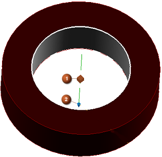
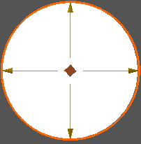

PMI 中心线
使用 PMI 中心线  命令来在您的模型中创建3D 中心线，以捕捉设计信息。PMI 中心线也可以作为补充几何体，其它 PMI 对象可以附着到它上面，比如基准符号与尺寸。
命令来在您的模型中创建3D 中心线，以捕捉设计信息。PMI 中心线也可以作为补充几何体，其它 PMI 对象可以附着到它上面，比如基准符号与尺寸。
当您创建或编辑中心线符号时，将出现两种手柄：
-
用于关联对象的关联手柄
-
用于调整 PMI 中心线大小的拖动手柄

显示所有延伸手柄
您也可以在中心线符号的各个脚上显示手柄，这在您想要在复杂图纸中快速放置中心线时比较有用。

要显示所有手柄，选择文件→实用工具→用户默认设置→制图→注释→符号选项卡，然后选中显示所有延伸手柄复选框。
位于何处？
|
应用模块 |
PMI |
|
工具条 |
PMI→补充几何体下拉菜单→PMI 中心线 |
|
菜单 |
产品制造信息→补充几何体→中心线 |